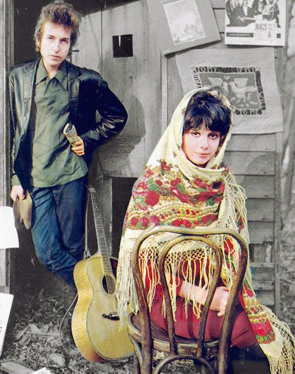
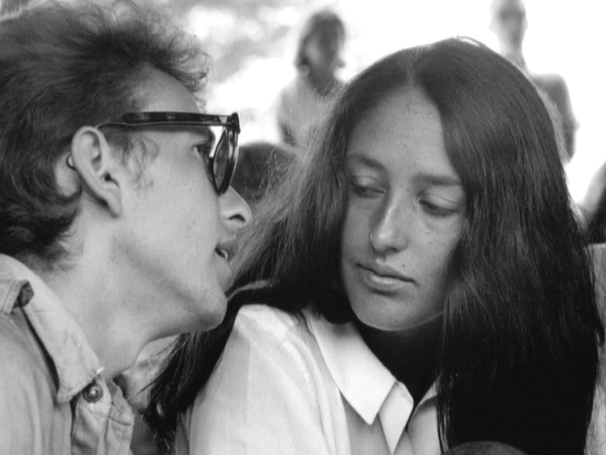
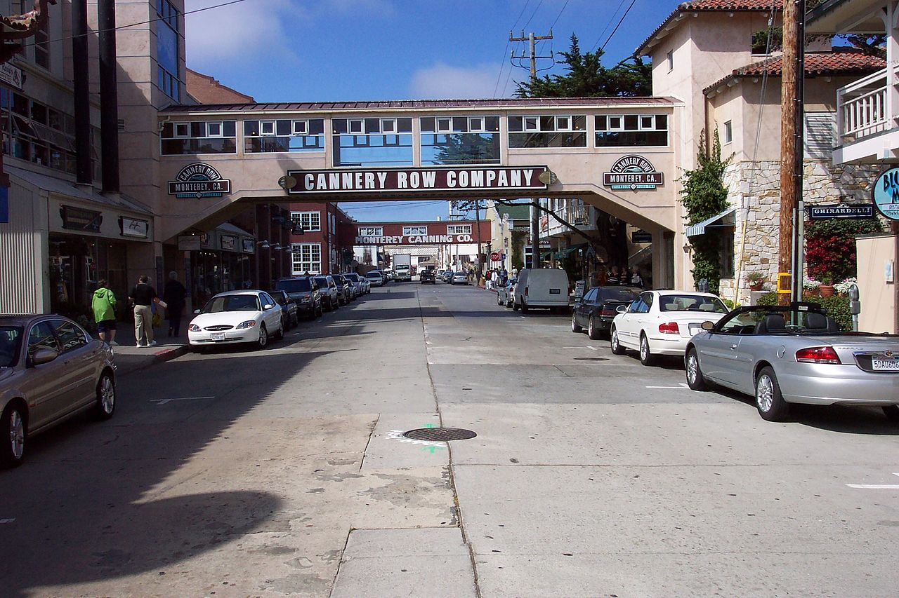
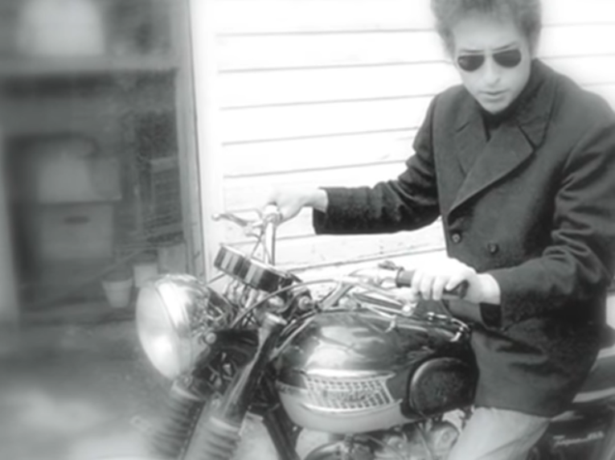
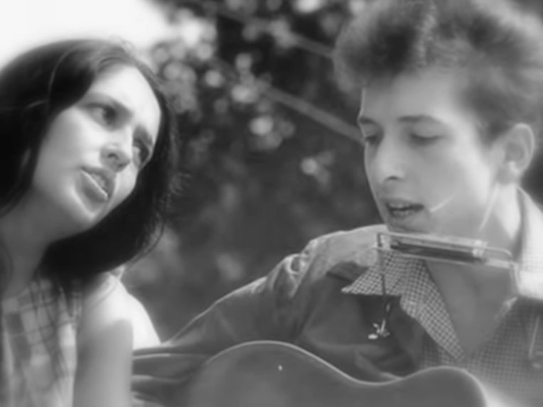
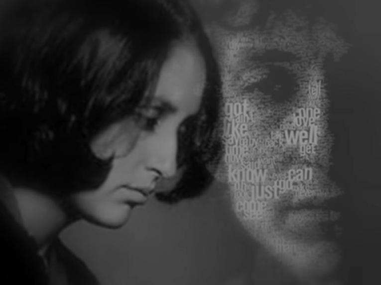

슬픈 눈을 한 저지대의 여인 (Sad-eyed lady of the lowlands) 가사 해설
게시: 2020-04-09T06:30:44+09:00
제 자동차를 얻어타시는 분들은 대개 존 바에즈(Joan Baez)의 노래, 좀 더 정확하게는 밥 딜런(Bob Dylan)의 노래를 바에즈가 다시 부른 곡에 시달리십니다. 나이에 따라, 어떤 분들은 '저와 노래 취향이 비슷하시군요' 하는 분들도 있습니다만 특히 젊은 분들은 '이건 뭐 미국 타령이네요'라고 평하는 분들도 있습니다. 어떤 분은 '멜로디는 같은 것이 계속 반복되네요' 라고 씁쓸하게 코멘트를 하시기도 합니다. 실제로 밥 딜런의 노래는 멜로디보다는 가사가 매우 중요합니다. 밥 딜런은 30개가 넘는 그래미 상도 받았지만 노벨 문학상을 받을 정도로 그의 가사는 많은 사람들에게 시적인 영감을 줍니다. 오늘 소개드리는 Sad-eyed lady of the lowlands도 마찬가지입니다. 이 노래는 1966년에 녹음되었는데, 이날 딜런은 저녁 6시부터 연주자들을 스튜디오에 불렀습니다만, 정작 본인은 거기서 가사를 계속 쓰고 있었습니다. 기다리다 지친 연주자들이 카드 놀이와 잡담을 하다가 결국 잠을 자기도 했습니다만, 딜런은 계속 가사를 썼습니다. 그러다 새벽 4시에 가사를 다 쓴 딜런이 연주자들을 불러모아 이 긴 노래의 녹음을 시작했다고 합니다. 이 노래는 무려 11분 23초나 됩니다. 그래서인지 딜런은 공연에서는 이 노래를 한번도 부른 적이 없습니다. 이 노래 가사는 전형적인 딜런의 스타일입니다. 엉뚱한 것 같으면서도 묘하게 어울리는 비유, 가령 '연기 같은 눈동자'라는 표현이나 '텅 빈 얼굴', '죽은 천사를 감추려는 농부들과 상인들' 등은 듣는 이들에게 무한한 상상력을 펼치게 합니다. 노래 가사의 묘미는 노래 가사를 들을 때 자신이 처한 상황과 기분에 따라 다양한 해석이 가능하다는 점이지요. 그런 와중에도 영어 가사의 라임이 기가 막히게 잘 맞는 것을 보십시요. (제가 아래에 빨간 색으로 표시했어요.) '슬픈 눈을 한 저지대의 여인'이라는 이 난해한 노래 가사를 읽어보면 마치 네덜란드 어떤 마을 성당의 성모 마리아 상을 보고 지은 노래인가 싶기도 하지만, 일반적인 해석은 밥 딜런의 첫번째 부인이었던 사라(Sara Lownds)에게 바치는 결혼 찬가라는 것입니다. 일단 Lowlands라는 단어는 사라가 밥 딜런과 만났을 때 쓰던 성인 Lownds와 비슷합니다. 그리고 가사 중의 '언젠가는 가야 하는 잡지책 남편'은 사라의 첫 남편인 Hans Lownds가 잡지사의 사진사였다는 점, 그리고 '너의 팔에 안긴 불한당의 아기'라는 것은 당시 사라가 두 아이를 둔 유부녀였다는 점을 떠올리게 합니다.

(밥 딜런과 사라 로운즈입니다. 그들은 12년간 결혼 생활을 했습니다.)
저는 언제나처럼 밥 딜런이 직접 부른 노래보다는 존 바에즈가 부른 버전을 더 좋아합니다. 아시다시피 존 바에즈는 딜런과 썸을 타는 관계였는데, 그런 중에 딜런을 낚아챈 것이 바로 유부녀 사라 로운즈였습니다. 자신이 사랑하던 남자를 빼앗아간 여자에게 그 남자가 바친 노래를 부르는 바에즈의 심정이 어떤지 잘 모르겠네요. 저는 저 가사 중 'Should I leave them by your gate' 부분의 목소리에서 뭔가 처연한 감정이 느껴지는데, 그것이 바에즈의 심정 아니었을까 합니다. 참고로 밥 딜런이 사라 로운즈와 결혼한 것은 1965년 말, 이 노래를 밥 딜런이 녹음한 것은 1966년 초, 그리고 바에즈가 이 노래를 녹음한 것은 1968년이었습니다.

아, 이 노래 가사 중에 나오는 캐너리 로우(Cannery Row)라는 것은 캘리포니아 해변 도시인 몬터레이(Monterey)의 어느 거리 이름입니다. 이 거리의 정식 이름은 Ocean View Avenue였는데, 여기에는 옛날부터 정어리 깡통 공장들이 밀집해있어서 '깡통 거리'라는 뜻의 캐너리 로우라는 별칭으로 불렸답니다. 그런데 존 스타인벡(John Steinbeck)이 이 거리를 배경으로 1930년대 대공황 시대를 그린 'Cannery Row'라는 소설을 써서 이 거리가 유명해졌고, 그래서 1958년에 이 거리의 공식 명칭을 아예 Cannery Row로 바꾸었습니다. 밥 딜런의 이 노래 덕분에 이 거리가 더 유명해진 것음 말할 것도 없습니다. 지금도 이 볼 것 없는 거리에는 그 명성에 끌려 오는 관광객들이 꽤 있다고 합니다. 노래와 문학은 이렇게 위대합니다.


결혼 축가로도, 사랑의 찬가 혹은 상심의 위로곡으로도, 심지어 장례식 추도곡으로도 잘 어울리는 이 노래의 존 바에즈 버전은 다음 유튜브에서 감상하세요. 아래 가사는 밥 딜런 오리지널이 아니라 존 바에즈 버전입니다. 약간 다르더군요. https://youtu.be/0-VIygLO4Is Sad-eyed lady of the lowlands 슬픈 눈을 한 저지대의 여인 With your mercury mouth in the missionary times And your eyes like smoke and your prayers like rhymes And your silver cross, and your voice like chimes Who do they think could bury you? 선교 시대를 떠올리게 하는 수은 같은 그대의 입 당신의 눈은 연기를, 기도는 운율을 떠올리게 해요 당신의 은십자가와 차임벨 같은 목소리 누가 당신을 묻을 수 있었을까요 ? With your pockets well protected at last And your streetcar visions which you place on the grass And your flesh like silk, and your face like glass Who could ever get to carry you? 마침내 당신의 호주머니를 잘 간수하게 되었고 당신은 시내전차에서 풀밭을 지켜봐요 당신의 육체는 비단, 얼굴은 유리같으니 그들 중 누가 당신을 데려갈 수 있을까요 ? Sad-eyed lady of the lowlands Where the sad-eyed prophets say that no man comes My warehouse eyes, my Arabian drums Should I put them by your gate Sad-eyed lady, should I wait? 슬픈 눈을 한 저지대의 여인 거기서는 슬픈 눈을 한 예언자들이 아무도 오지 않는다고 말하지요 창고에 둔 나의 눈 그리고 나의 아라비아 북들 제가 그것들을 당신 문 옆에 두고 가야 할까요 슬픈 눈의 여인이여, 제가 기다려야 할까요

With your sheets like metal and your belt like lace And your deck of cards missing the jack and the ace And your basement clothes and your hollow face Who among them can think he could outguess you? 철판 같은 당신의 침대보, 레이스 같은 그대의 벨트 잭과 에이스가 없어진 당신의 카드 당신 지하실의 옷가지와 당신의 텅 빈 얼굴 그들 중 누가 당신을 미리 짐작할 수 있을까요 ? With your silhouette when the sunlight dims Into your eyes where the moonlight swims And your matchbook songs and your gypsy hymns Who among them would try to impress you? 해질녁 당신의 실루엣이 달빛이 춤추는 당신의 눈동자에 어려요 당신의 성냥첩에 적힌 노래, 그리고 집시 찬가 그들 중 누가 당신을 감동시키려 할 수 있었을까요 ? Sad-eyed lady of the lowlands Where the sad-eyed prophets say that no man comes My warehouse eyes, my Arabian drums Should I leave them by your gate Or, sad-eyed lady, should I wait? 슬픈 눈을 한 저지대의 여인 거기서는 슬픈 눈을 한 예언자들이 아무도 오지 않는다고 말하지요 창고에 둔 나의 눈 그리고 나의 아라비아 북들 제가 그것들을 당신 문 옆에 두고 가야 할까요 혹은, 슬픈 눈의 여인이여, 제가 기다려야 할까요
The kings of Tyrus with their convict list Are waiting in line for their geranium kiss And you wouldn’t know it would happen like this But who among them really wants just to kiss you? 재소자 명단을 든 티루스의 왕들이 제라늄 꽃 키스를 위해 줄지어 기다리고 있어요 당신은 일이 이렇게 벌어질 줄은 몰랐겠지요 하지만 그들 중 누가 그저 당신에게 키스만 하길 원할까요 ? With your childhood flames on your midnight rug And your Spanish manners and your mother’s drugs And your cowboy mouth and your curfew plugs Who among them do you think could resist you? 당신의 한밤중 깔개 위의 어릴 적 불꽃들 당신의 스페인식 예절과 어머니가 드시던 약들 당신의 카우보이 입과 통금용 마개 그들 중 누가 당신을 거부할 수 있었겠어요 ? Sad-eyed lady of the lowlands Where the sad-eyed prophets say that no man comes My warehouse eyes, my Arabian drums Should I leave them by your gate Or, sad-eyed lady, should I wait? 슬픈 눈을 한 저지대의 여인 거기서는 슬픈 눈을 한 예언자가 아무도 오지 않는다고 말하지요 창고에 둔 나의 눈 그리고 나의 아라비아 북들 제가 그것들을 당신 문 옆에 두고 가야 할까요 혹은, 슬픈 눈의 여인이여, 제가 기다려야 할까요
Oh, the farmers and the businessmen, they all did decide To show you where dead angels were that they used to hide Why did they pick you to sympathize with their side? Oh, how could they ever mistake you? 아, 농부들과 상인들은 모두 마음을 정했네요 죽은 천사들을 숨겨둔 곳을 당신에게 보여주기로요 대체 왜 당신이 그들과 뜻을 같이할 거라고 생각했을까요 ? 어떻게 당신을 그렇게 오해할 수 있었을까요 ? They wished you’d accepted the blame for the farm But with the sea at your feet and the phony false alarm And with the child of a hoodlum wrapped up in your arms How could they ever have persuaded you? 그들은 당신이 농장 대신 비난을 받아주길 바랬지요 하지만 바닷물에 잠긴 당신의 발과 거짓 경보 그리고 당신의 팔에는 불한당의 아이가 안겨있으니 그들이 어떻게 당신을 설득할 수 있었을까요 ? Sad-eyed lady of the lowlands Where the sad-eyed prophets say that no man comes My warehouse eyes, my Arabian drums Should I leave them by your gate Or, sad-eyed lady, should I wait? 슬픈 눈을 한 저지대의 여인 거기서는 슬픈 눈을 한 예언자들이 아무도 오지 않는다고 말하지요 창고에 둔 나의 눈 그리고 나의 아라비아 북들 제가 그것들을 당신 문 옆에 두고 가야 할까요 혹은, 슬픈 눈의 여인이여, 제가 기다려야 할까요

With your sheet-metal memory of Cannery Row And your magazine-husband who one day just had to go And your gentleness now, which you just can’t help but show Who among them do you think would employ you? 당신이 기억하는 캐너리 로우의 판금 같은 추억 어느날 그냥 떠나야 했던 당신의 잡지책 남편 그리고 감출 길 없는 당신의 상냥함 그들 중 누가 당신을 고용하려 했겠어요 ? Now you stand with your thief, you’re on his parole With your holy medallion in your fingers now that hold And your saintlike face and your ghostlike soul Oh, who among them do you think could destroy you? 이제 당신은 그대의 도둑과 한편이군요, 그의 가석방을 당신도 함께 해요 당신의 손끝이 접는 그대의 성스러운 메달 당신의 성스러운 얼굴과 유령 같은 영혼 아, 그들 중 누가 당신을 파멸시킬 수 있었겠어요 ? Sad-eyed lady of the lowlands Where the sad-eyed prophets say that no man comes My warehouse eyes, my Arabian drums Should I leave them by your gate Or, sad-eyed lady, should I wait? 슬픈 눈을 한 저지대의 여인 거기서는 슬픈 눈을 한 예언자들이 아무도 오지 않는다고 말하지요 창고에 둔 나의 눈 그리고 나의 아라비아 북들 제가 그것들을 당신 문 옆에 두고 가야 할까요 혹은, 슬픈 눈의 여인이여, 제가 기다려야 할까요

Source : https://en.wikipedia.org/wiki/Sad_Eyed_Lady_of_the_Lowlands https://en.wikipedia.org/wiki/Cannery_Row_(novel) https://en.wikipedia.org/wiki/Cannery_Row https://en.wikipedia.org/wiki/Sara_Dylan